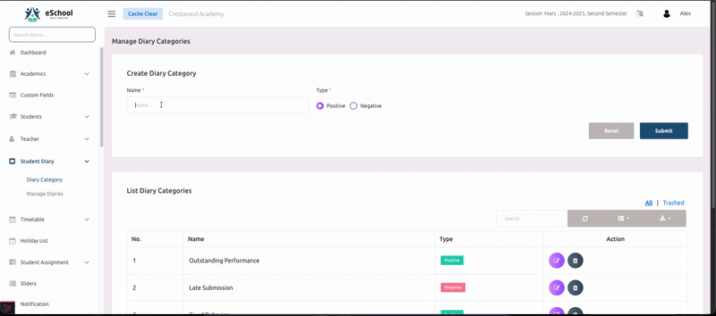
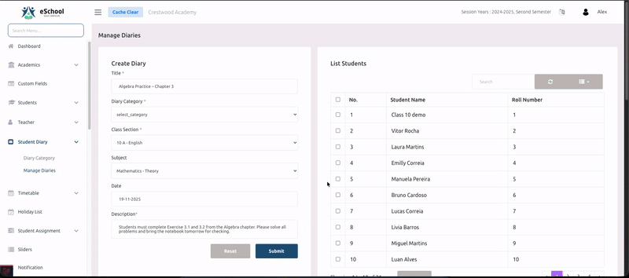

📔 Student Diary ✨ NEW FEATURE
This is a newly added feature in the latest version of eSchool SaaS. It provides a comprehensive digital diary system to enhance communication between teachers, students, and parents.
The Student Diary feature is a comprehensive digital diary system designed to enhance communication between teachers, students, and parents. This feature allows teachers and school administrators to create diary entries for students, categorize them, and enable parents to view and filter these entries through the mobile application.
Overview
The Student Diary system works across three platforms:
- School Admin Panel - For administrative management
- Teacher Admin Panel - For teachers to create and manage diary entries
- Teacher App - For teachers to create and manage diary entries
- Mobile App - For students and parents to view diary entries
The workflow consists of three main steps:
- Create Diary Categories - Define categories with positive or negative marking
- Create Diary Entries - Add diary notes for students
- View in App - Students/Parents view and filter diary entries
Step 1: Creating Diary Categories
Before creating diary entries, you must first set up diary categories in the admin panel. Categories help organize diary entries and can be marked as positive or negative.
How to Create a Diary Category
- Navigate to the Diary Category section in the admin panel
- Click on Add New Category button
- Fill in the following details:
- Category Name - Enter a descriptive name (e.g., "Homework", "Behavior", "Achievement", "Attendance")
- Category Type - Select either:
- Positive - For encouraging notes (achievements, good behavior, completed work)
- Negative - For areas of concern (missed homework, behavior issues)
- Click Save to create the category

Category Examples
Positive Categories:
- 🌟 Outstanding Performance
- 👍 Good Behavior
- ✅ Homework Completed
- 🏆 Extra Curricular Achievement
- 📈 Improved Performance
Negative Categories:
- ⚠️ Homework Not Submitted
- 🚫 Behavioral Issues
- 📅 Attendance Concern
- ❌ Incomplete Assignment
- 📊 Needs Improvement
Step 2: Creating Diary Entries
Once categories are set up, teachers and admins can create diary entries for students.
How to Create a Diary Entry
- Go to the Diary section in the admin/teacher panel
- Click on Create Diary button
- Fill in the required information:
- Title (*) - Enter a clear, descriptive title for the diary entry
- Subject - Select the relevant subject (optional)
- Category - Choose from the pre-created categories
- Class - Select the class/grade
- Student Selection - You have two options:
- Specific Students - Select individual students from the class
- All Students - Apply the diary entry to all students in the selected class
- Description - Write detailed notes or comments
- Date - Select the date for the diary entry
- Click Submit to create the diary entry

Important Notes
- Fields marked with (*) are mandatory
- A diary entry can be sent to multiple students at once
- Teachers can only create entries for classes they are assigned to
- Admins have access to create entries for all classes
- Once created, the diary entry is immediately visible to parents/students in the mobile app
Best Practices
- 📝 Use clear and concise titles
- 📋 Provide specific details in the description
- 🎯 Choose the appropriate category (positive/negative)
- 💼 Be professional and constructive in your communication
- 🔄 Update diary entries regularly to keep parents informed
Step 3: Viewing Diary in Mobile App
Students and parents can view diary entries through the mobile application with powerful filtering and sorting options.
Features in Mobile App
1. View All Diary Entries
Parents and students can see all diary entries assigned to the student in a chronological list.
2. Filter Options
The app provides multiple filter options to help users find specific entries:
Filter by Category:
- View entries from specific categories only
- Helpful for tracking specific areas like homework or behavior
Filter by Subject:
- See diary entries related to particular subjects
- Useful for subject-specific communication
Filter by Type:
- Positive Notes - View only encouraging and positive entries
- Negative Notes - View only areas of concern
3. Sort Options
Organize diary entries based on preference:
- Newest First - Most recent entries appear at the top (default)
- Oldest First - Historical entries appear first
4. Detailed View
- Tap on any diary entry to see full details
- View the complete description, date, subject, and category
- See which teacher created the entry

User Roles and Permissions
👨💼 School Admin
- Create and manage all diary categories
- Create diary entries for any student in any class
- View all diary entries across the school
- Edit or delete diary entries
👩🏫 Teacher Admin
- View all diary categories
- Create diary entries only for assigned classes
- Edit or delete their own diary entries
- Cannot modify diary categories
📱 Teacher App
- View all diary categories
- Create diary entries only for assigned classes
- Edit or delete their own diary entries
- Cannot modify diary categories
👪 Parents/Students (Mobile App)
- View diary entries assigned to the student
- Filter and sort diary entries
- Cannot create, edit, or delete entries
- Receive notifications for new diary entries
Frequently Asked Questions
Q1: Can I edit a diary entry after creating it?
Answer: Yes, admins can edit any diary entry, and teachers can edit their own entries. Go to the diary list, select the entry, and click the edit button.
Q2: Will parents receive notifications for new diary entries?
Answer: Yes, parents receive push notifications on their mobile app when a new diary entry is created for their child.
Q3: Can I create a diary category after creating entries?
Answer: Yes, you can create categories at any time. However, it's recommended to set up categories before creating entries for better organization.
Q4: How many categories can I create?
Answer: There is no limit on the number of categories. Create as many as needed for your school's requirements.
Q5: Can parents reply to diary entries?
Answer: Currently, the diary feature is one-way communication from teachers to parents. For two-way communication, use the messaging feature.
Q6: Is there a limit on diary entry length?
Answer: While there's no strict character limit, it's recommended to keep entries concise and focused for better readability.
Q7: Can I delete old diary entries?
Answer: Yes, admins can delete any diary entry. Teachers can delete only their own entries. Deleted entries are moved to trash and can be permanently removed from there.
💡 Tips for Effective Usage
- Set Clear Categories - Create categories that align with your school's communication needs
- Be Consistent - Update diary entries regularly to maintain effective communication
- Use Positive Reinforcement - Balance negative notes with positive encouragement
- Be Specific - Provide actionable feedback rather than generic comments
- Timely Updates - Create entries promptly so parents stay informed in real-time
- Professional Language - Maintain professional and respectful tone in all entries
- Privacy - Ensure sensitive information is communicated privately, not through public diary entries
🔧 Settings
To configure Student Diary settings, navigate to System Settings > Student Diary Settings where you can:
- Enable or disable the diary feature
- Set notification preferences
- Configure default categories
- Manage diary permissions
This feature helps build a strong school-parent communication bridge, ensuring students receive the support they need both at school and at home. 🏫💙